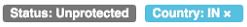
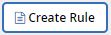
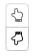

Creating and managing rules inside NetApp SaaS Backup for Office 365 Edit on GitHub Request doc changes
Contributors
Rules allow you to automatically move users to a preselected backup tier based on predefined criteria.
Creating rules
You can create rules for Microsoft Exchange Online and Microsoft OneDrive for Business. Rules for Microsoft Exchange Online are applied before rules for Microsoft OneDrive for Business. You cannot create rules for Microsoft SharePoint Online.
You must apply a user defined filter to your data before you can create a rule. Applied filters are displayed below the Filter icon. NetApp SaaS Backup for Office 365 default filters appear in gray. User defined filters appear in light blue.

-
From the Dashboard, click the number above UNPROTECTED in the box of the service for which you want to create rules.

If no user created filter is applied,  does not appear. -
Click Filter.

-
Click the Select dropdown menu and select your filter.
A search field appears. -
Enter your search criteria.
-
Click Apply Filter.
-
Click Create Rule.
-
Enter a name for the rule.
-
For Destination Group, select the tier to which you want users who meet the rule’s criteria to be moved.
-
Select Apply to existing items if you want the rule to be immediately applied to all unprotected items. If not selected, the rule is applied to newly discovered items and any unprotected items the next time new items are discovered.
Multiple rules can be created. The rules are applied in the order they appear in the Manage Rules list.
You can click the  to move a rule up or down in the list.
Managing rules
You can apply existing rules to unprotected items, change the order in which rules are applied, and delete rules.
-
From the Dashboard, click the number above UNPROTECTED in the box of the service for which you want to create rules.
-
Click Filter.
-
Click Rules.
The existing rules are displayed. -
Click Apply Now to apply the rule to existing unprotected items.
-
Click the trash can to delete the rule.
The status of the items to which the rule was previously applies is not changed when the rule is deleted.